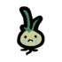
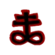
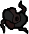
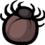

предметы
артефакты
Грустный лук

+0.7 скорострельности
Бримстоун

Заменяет стрельбу на выстрел кровавым потоком, который проходит сквозь противников и препятствия и имеет неограниченную дальность. Уменьшает скорострельность в 3 раза.
Священное сердце
Даёт самонаводящиеся слёзы, множитель х2.3 урона, +1 урон, +0.5 дальности, +0.75 высоты слезы, -0.4 скорострельности, -0.25 скорости слезы, +1 контейнер красного сердца, лечит все сердца.
брелки
Рак

+1 скорострельности.
Изогнутый рог
+2 к урону вне формулы.
Клещ

Боссы появляются со сниженным здоровьем.